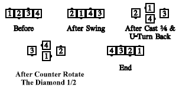
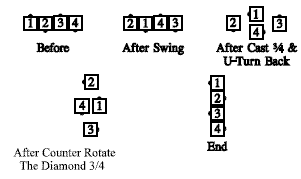

From a wave: All Swing, then the centers Cast Off ¾ while the ends U-Turn Back. All Counter Rotate the diamond 1/2 (formerly called "turning the star 1/2"), and Flip the Diamond. Ends in a wave.

One can also "Counter Rotate the Diamond" by other amounts than 1/2. For example, Alter the Wave, but Counter Rotate the Diamond 3/4:

Teaching Hint: One can think of the Counter Rotate as two Diamond Circulates (except that the centers of the diamond remain centers throughout).